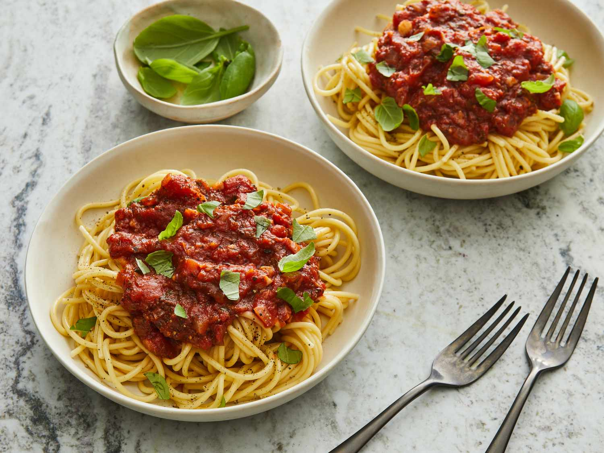
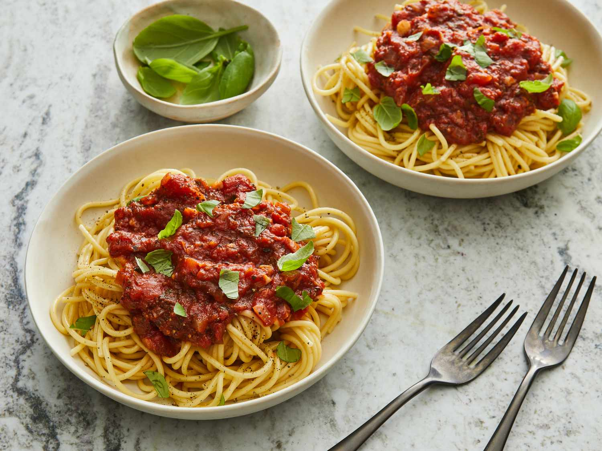
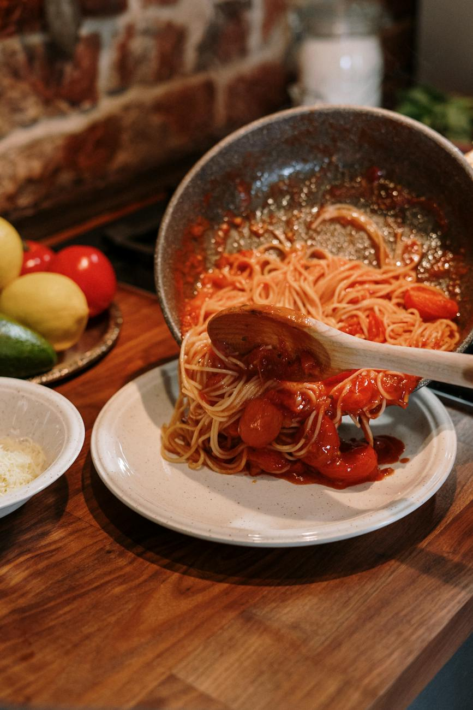
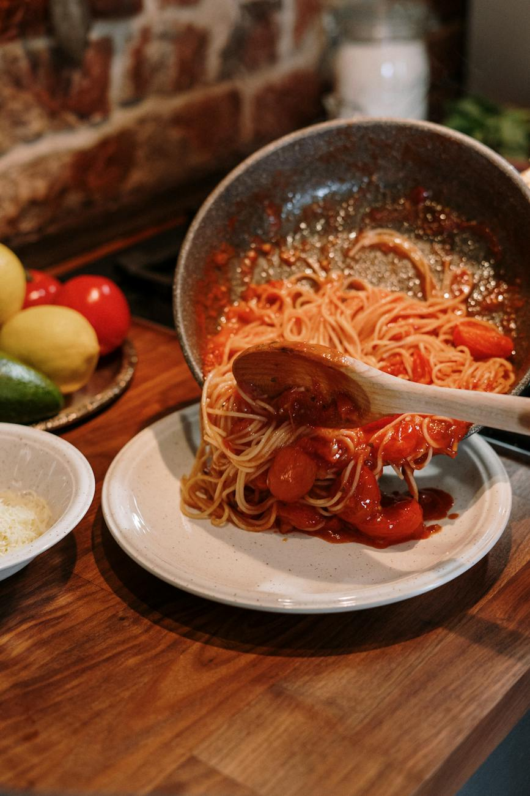
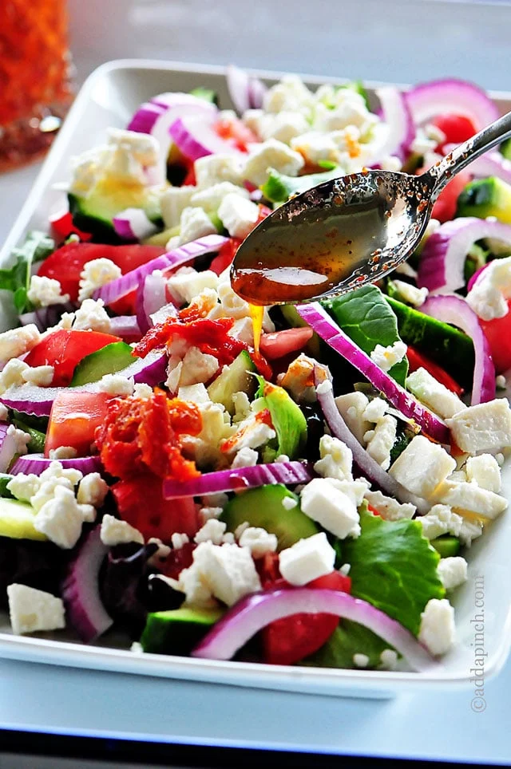
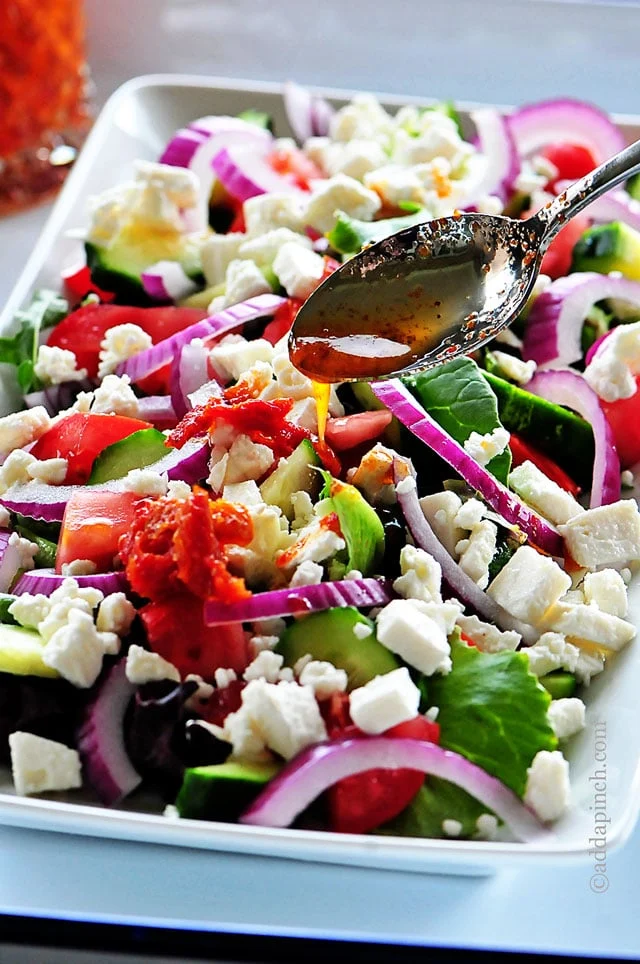
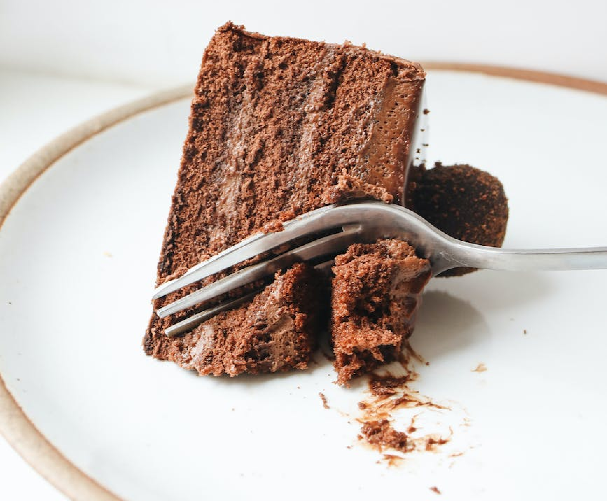
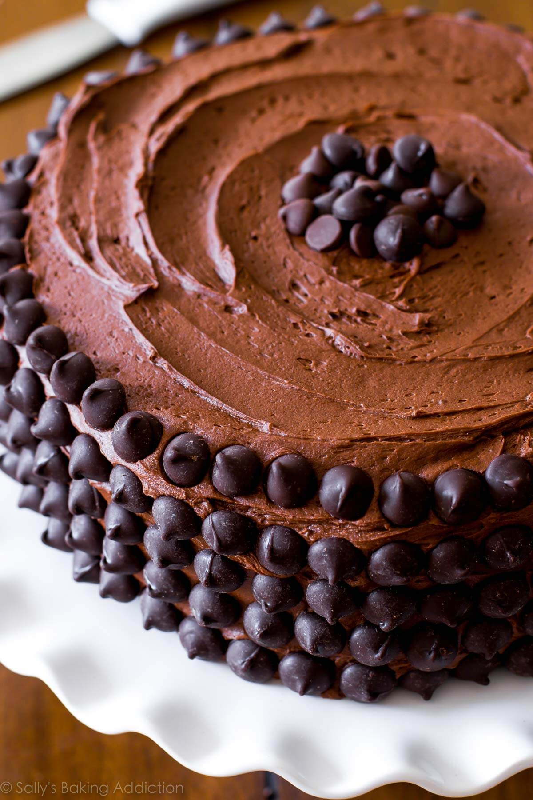
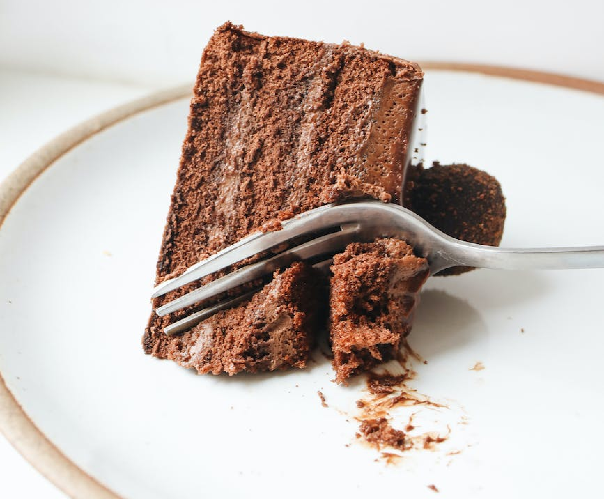
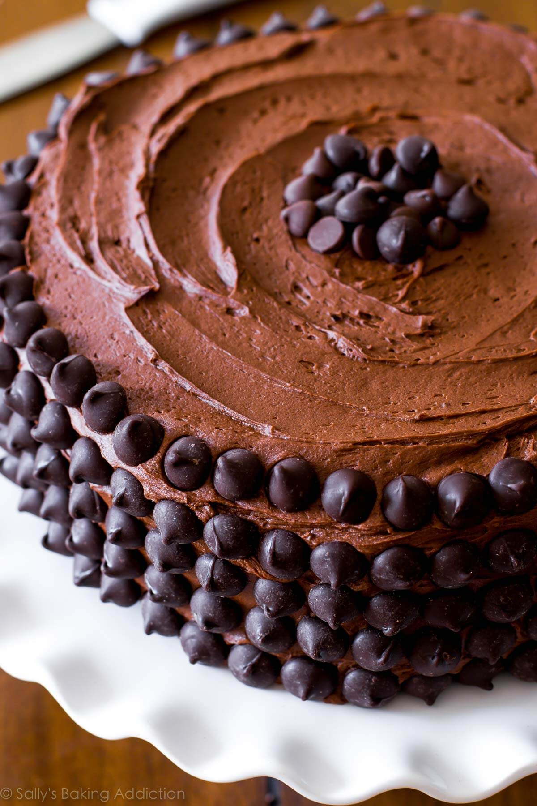

Common Class Project
Recipes
Fill your table
These meals are on the table in no time—and taste delicious, too.
Find and share everyday cooking inspiration, discover recipes, cooks, videos, and how-tos based on the food you love.
Recipe List

Dinners
Spaghetti
Spaghetti is a long, thin, solid, cylindrical pasta. It is a staple food of traditional Italian cuisine. Like other pasta, spaghetti is made of milled wheat, water, and sometimes enriched with vitamins and minerals. Italian spaghetti is typically made from durum-wheat semolina.
 

 

Ingridients
- 1 pound lean ground meat like beef, turkey, chicken or lamb
- 3 tablespoons olive oil
- 1 cup (130 grams) chopped onion
- 3 garlic cloves, minced (1 tablespoon)
- 2 tablespoons tomato paste
- 1/2 teaspoon dried oregano
- Pinch crushed red pepper flakes
- 1 cup water, broth or dry red wine
- 1 (28-ounce) can crushed tomatoes
- Salt and fresh ground black pepper
- Handful fresh basil leaves, plus more for serving
- 12 ounces dried spaghetti or favorite pasta shape
- 1/2 cup shredded parmesan cheese
Directions
- Heat the oil in a large pot over medium-high heat (we use a Dutch oven). Add the meat and cook until browned, about 8 minutes. As the meat cooks, use a wooden spoon to break it up into smaller crumbles.
- Add the onions and cook, stirring every once and a while, until softened, about 5 minutes.
- Stir in the garlic, tomato paste, oregano, and red pepper flakes and cook, stirring continuously for about 1 minute.
- Pour in the water and use a wooden spoon to scrape up any bits of meat or onion stuck to the bottom of the pot. Stir in the tomatoes, 3/4 teaspoon of salt, and a generous pinch of black pepper. Bring the sauce to a low simmer. Cook, uncovered, at a low simmer for 25 minutes. As it cooks, stir and taste the sauce a few times so you can adjust the seasoning accordingly (see notes for suggestions).
- About 15 minutes before the sauce finishes cooking, bring a large pot of salted water to the boil, and then cook pasta according to package directions, but check for doneness a minute or two before the suggested cooking time.
- Take the sauce off of the heat, and then stir in the basil. Toss in the cooked pasta, and then leave for a minute so that the pasta absorbs some of the sauce. Toss again, and then serve with parmesan sprinkled on top.
Side Dishes
Mediterranean Salad
Mediterranean salad is a perfectly balanced appetizer or side dish with so many of the Mediterranean flavors loved by many.
 

Ingridients
- 1 English cucumber
- 4 Roma tomatoes
- 1/2 red onion
- 1 cup kalamata olives
- 4 ounces feta cheese
- 2 tablespoons olive oil
- 2 tablespoons red wine vinegar
- 1 teaspoon Greek oregano
- 1/2 teaspoon kosher salt
- Fresh ground black pepper
Directions
- Cut the Englsih Cucumber into 1/2 inch half moons.
- Cut the Roma tomatoes in half and then cut into 1/2 inch pieces.
- Cut the read onion into thin slices.
- Cut the kalamata olives in half.
- Cut the feta cheese into 1/2 inch cubes.
- Combine the cucumbers, tomatoes, onion, and feta in a large bowl.
- Season with the olive oil, red wine vinegar, oregano, salt and pepper.
- Toss to combine and serve.
Dessert
Triple Chocolate Cake
With a super moist crumb and fudgy, yet light texture, this chocolate cake recipe will soon be your favorite too. Top with chocolate buttercream and chocolate chips for 3x the chocolate flavor. You can also prepare this chocolate layer cake as a sheet cake, too.
 



Ingridients
Cake
- 1 and 3/4 cups (219g) all-purpose flour
- 3/4 cup (62g) unsweetened natural cocoa powder
- 1 and 3/4 cups (350g) granulated sugar
- 2 teaspoons baking soda
- 1 teaspoon baking powder
- 1 teaspoon salt
- 2 teaspoons espresso powder (optional)
- 1/2 cup (120ml) vegetable oil (or canola oil or melted coconut oil)
- 2 large eggs, at room temperature
- 2 teaspoons pure vanilla extract
- 1 cup (240ml) buttermilk, at room temperature
- 1 cup (240ml) freshly brewed strong hot coffee (regular or decaf)
Chocolate Buttercream
- 1 and 1/4 cups (2.5 sticks or 290g) unsalted butter, softened to room temperature
- 3 and 1/2 cups (420g) confectioners’ sugar
- 3/4 cup (65g) unsweetened cocoa powder (natural or dutch process)
- 3–5 Tablespoons (45-75ml) heavy cream (or half-and-half or milk), at room temperature
- 1/4 teaspoon salt
- 1 teaspoon pure vanilla extract
- Optional for decoration: semi-sweet chocolate chips
Directions
- Preheat oven to 350°F (177°C). Grease two 9-inch cake pans, line with parchment paper rounds, then grease the parchment paper. Parchment paper helps the cakes seamlessly release from the pans. (If it’s helpful, see this parchment paper rounds for cakes video & post.)
- Make the cake: Whisk the flour, cocoa powder, sugar, baking soda, baking powder, salt, and espresso powder (if using) together in a large bowl. Set aside. Using a handheld or stand mixer fitted with a whisk attachment (or you can use a whisk) mix the oil, eggs, and vanilla together on medium-high speed until combined. Add the buttermilk and mix until combined. Pour the wet ingredients into the dry ingredients, add the hot water/coffee, and whisk or beat on low speed until the batter is completely combined. Batter is thin.
- Divide batter evenly between pans. Bake for 23-26 minutes or until a toothpick inserted in the center comes out clean. Baking times vary, so keep an eye on yours. The cakes are done when a toothpick inserted in the center comes out clean. (Note: Even if they’re completely done, the cooled cakes may *slightly* sink in the center. Cocoa powder is simply not as structurally strong as all-purpose flour and can’t hold up to all the moisture necessary to make a moist tasting chocolate cake. It’s normal!)
- Remove the cakes from the oven and set on a wire rack. Allow to cool completely in the pan.
- Make the buttercream: With a handheld or stand mixer fitted with a paddle attachment, beat the butter on medium speed until creamy – about 2 minutes. Add confectioners’ sugar, cocoa powder, 3 Tablespoons heavy cream, salt, and vanilla extract. Beat on low speed for 30 seconds, then increase to high speed and beat for 1 full minute. Do not over-whip. Add 1/4 cup more confectioners’ sugar or cocoa powder if frosting is too thin or 1-2 more Tablespoons of cream if frosting is too thick. (I usually add 1 more.) Taste. Add another pinch of salt if desired.
- Assemble and frost: If cooled cakes are domed on top, use a large serrated knife to slice a thin layer off the tops to create a flat surface. This is called “leveling” the cakes. Discard or crumble over finished cake. Place 1 cake layer on your cake stand or serving plate. Evenly cover the top with frosting. Top with 2nd layer and spread remaining frosting all over the top and sides. I always use an icing spatula and bench scraper for the frosting. Garnish with chocolate chips, if desired.
- Refrigerate uncovered cake for at least 30-60 minutes before slicing to help set the shape. After that, you can serve the cake or continue refrigerating for up to 4–6 hours before serving. Cake can be served at room temperature or chilled.
- Cover leftover cake tightly and store in the refrigerator for 5 days. I like using a cake carrier for storing and transporting.